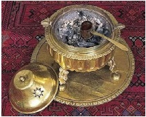

1683 yılında Viyana önlerine gelen Merzifonlu Kara Mustafa Paşa şehri alacağından o kadar emindi ki Viyana’yı aldıktan sonra şehirde yapacağı geçit törenini planlıyordu. Bu nedenle, bu büyük merasimde kullanılacak eşyaları Topkapı Sarayı’ndan çıkarttırmış ve yanına almıştı. Müttefik ordusunun başına Polonya Kralı Jean Sobiesky’nin geçmesiyle, Merzifonlu Kara Mustafa Paşa’nın bütün hayalleri yıkılmış oldu. Bunun üzerine her şeyini Viyana surlarının önünde bırakan Kara Mustafa Paşa askerleriyle beraber Belgrad’a doğru çekildi. Geride kalan ne varsa Viyana’yı kurtaran Polonya Kralı Sobiesky’nin oldu. (Bu olayın sonucu olarak, bugün Topkapı’da bile bulunmayan bazı değerli Osmanlı eserleri Polonya müzelerinde sergilenmektedir.)
Bu sırada ilginç bir olay yaşandı: Hazinelerin yanında çuvallar dolusu çekilmemiş kahve bulunmaktaydı. Kahve çekirdeklerini gören Avusturyalılar gördükleri çekirdekleri başka bir şey zannederek “Türkler meğerse keçi pisliği yerlermiş” dediler ve kahve çekirdeklerini imha etmeye çalıştırlar. Daha önce Osmanlı topraklarında yaşamış bir Viyanalı’nın kahve çekirdeklerini fark etmesi ve Avusturyalılara tanelerin ne işe yaradığını anlatması sonucunda Avrupalılar kahveyle tanışmış oldular.

Mangalda Türk Kahvesi